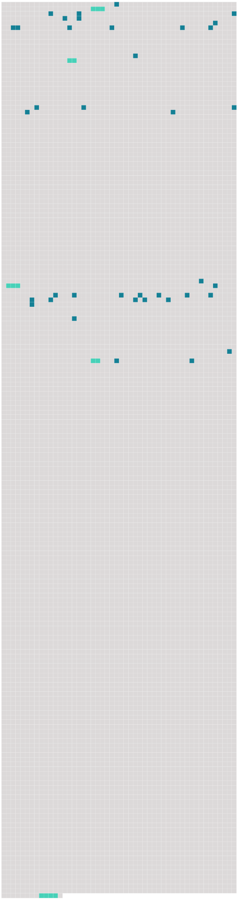

Longueur nb maillons : 43 mentions |
 |
La mère de Rosalie était cette Charlotte Pictet à laquelle M. Lucien Perey a emprunté bien des lettres dans sa Vie intime de [Voltaire] [1 phrases]
M. L. Perey a raconté déjà comment les Pictet de St-Jean voisinaient familièrement avec [l'illustre philosophe] , et les papiers de Rosalie et de sa famille, ont fourni à l'aimable biographe beaucoup de détails sur ce qui se passait aux Délices, et à Ferney.
On sait qu'au début de [son] séjour dans notre pays, [Voltaire] habita en été Les Délices près Genève, en hiver tantôt Monrion, près Lausanne, tantôt cette ville -même, au faubourg du Petit-Chêne. À Lausanne comme à Genève, [Voltaire] avait trouvé une société très aimable et lettrée, toute disposée à jouer [ses] tragédies.
[Ses] principaux acteurs se recrutèrent parmi la famille de Constant, et c'est ici que nous rencontrons Samuel, qui deviendra le père de Rosalie. [2 phrases] « [Voltaire] attirait aux Délices les amis qu' [il] [s'] était faits à Lausanne, écrira plus tard Rosalie ; [il] cherchait à les lier avec des voisins qu' [il] avait. [1 phrases]
[Voltaire] y prit un intérêt qu' [il] conserva toujours à la famille ». [6 phrases] Charlotte lui écrivait alors des lettres fort tendres et humides des larmes que faisait couler son absence ; mais, quand on est jeune, spirituelle, piquante, quand on a de beaux yeux noirs, ils ne peuvent pas toujours pleurer, et l'abandonnée trouvait chez [Voltaire] le moyen de s'amuser beaucoup. Bien souvent après son mariage, elle remonta sur les planches édifiées à Ferney et prit un rôle dans l'une ou l'autre des pièces composées par [l'ami] de ses parents. [25 phrases] Les yeux de [Voltaire] comme du sang, examinant un nouvel ouvrage qu' [il] venait de recevoir de l'imprimerie pour envoyer à Paris. [1 phrases] [Il] a renoncé à Stuttgard, [il] nous a appris qu'on avait, ces jours passés, pendu Sirven en effigie, à Toulouse. [1 phrases] dit [-il] , quand on est dans un cloaque, il faut être couvert de boue », et puis : « ces marauds de rois et de prêtres!! [72 phrases]
Enfin nous serions tentés de croire qu'on pourrait évoquer ici le refrain d'une vieille chanson : Des enfants qui fréquentaient, qui coudoyaient [le terrible homme] !! [2 phrases] Cinquante ans plus tard, Rosalie évoqua ses souvenirs sur [Voltaire] à la demande d'un Genevois, M. [2 phrases]
Cet écrit de la main de Rosalie nous apprend comment, avec ses frères et sa sœur, elle jouait dans le jardin et même dans la chambre de travail du [philosophe] « Dans [ses] tems de misanthropie même, nous dit -elle, [il] voulait toujours revoir [ses] anciens voisins et [recevait] bien jusqu'aux enfans. [Il] les laissait jouer dans [sa] bibliothèque avec un grand léopard empaillé placé au milieu, ouvrir [ses] livres, regarder [ses] estampes. [1 phrases] dit [-il] , [je] suis bien heureux, [je] n'avais plus que deux ennemis, les Turcs et les hannetons. Catherine me tue les Turcs, vous [me] délivrez des hannetons …… [5 phrases] « Un jour, nous étions invités chez notre tante, la marquise de Gentil, à Mon Repos, pour voir représenter Nanine devant [Voltaire] [15 phrases]
» [3 phrases] Je ne sais ce que [le patron] veut faire. [Il] parle de vendre Ferney, ensuite de ne le pas vendre, enfin j'attends [ses] volontés …… [255 phrases] … N'entendez -vous point parler de la tragédie de [M. de Voltaire] ?? |
 |
La ressource peut être téléchargée sur la page Ortolang
Si vous avez des questions ou vous voyez des erreurs, merci d'envoyer un mail à silvia.federzoni89@gmail.com
Site développé par S. Federzoni (contact)